Randomly sampling patches gives a very poor result. The patches are not related to each other at all, so the result is very blocky.
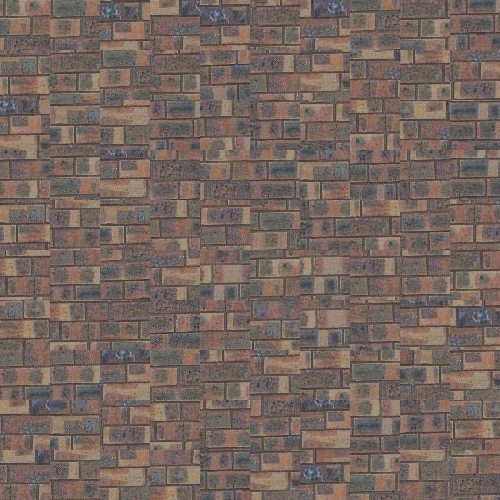Using the SSD to find patches that overlap well with the existing patches gives a better result. Each patch is based on the adjacent patches so the result is more smooth. However, since the patches are not blended together at all there is still some blockiness.
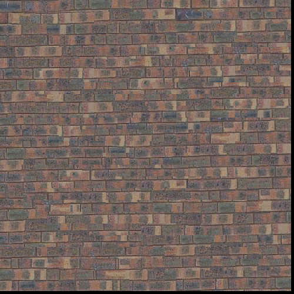Quilt cut uses the same method for choosing a new patch as quilt simple, but it removes blockiness by cutting away parts of the added patch so that the transition is more smooth. This achieves a high quality result that is very smooth.
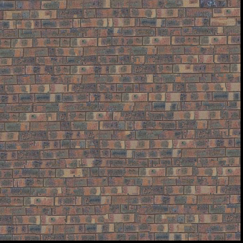
Overview of the seam finding process:
Two selected patches.
The cost of the overlapping portions and the minimum cut path.
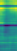 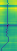The two patches next to each other with the minimum cut path highlighted.
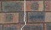The image quilting texture synthesis algorithm picks patches with a low cost of overlap and then find the cost of the difference between the overlapping portions and defines a new border between the two images that makes the transition more seamless
 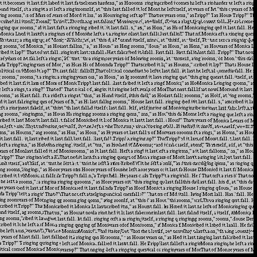
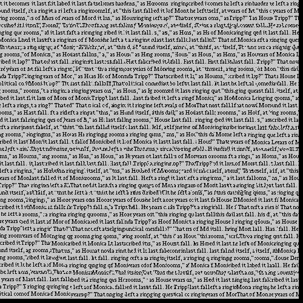
 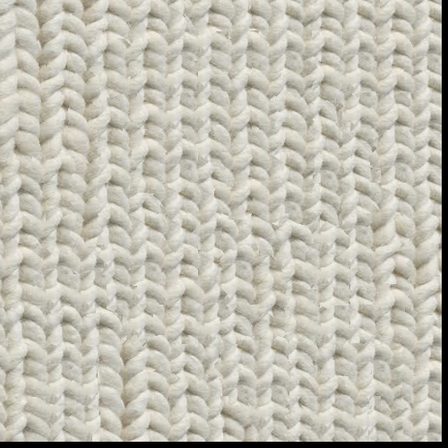
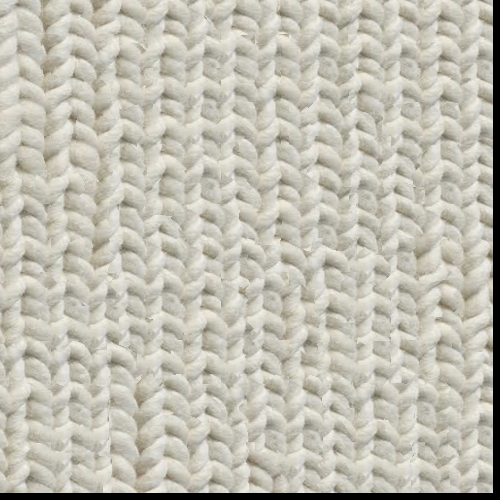
Texture transfer works by using the same quilt cut function but with an additional cost. the additional cost is the difference between the luminance of a target image and the sample image. This ensure that the patches that are chosen match the luminance of the target image.
 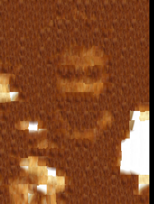
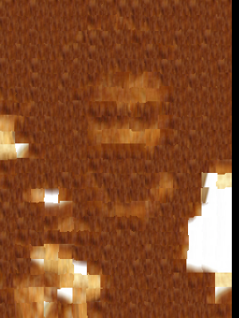
One design decision I made was selecting a random patch from the k patches with the lowest cost. This was done instead of selecting patches randomly that were below a certain cost threshold.
One of the main difficulties was making sure that all the indices of patches were properly selected, so that the correct patch was chosen. It was also often difficult to make good looking texture synthesis results.